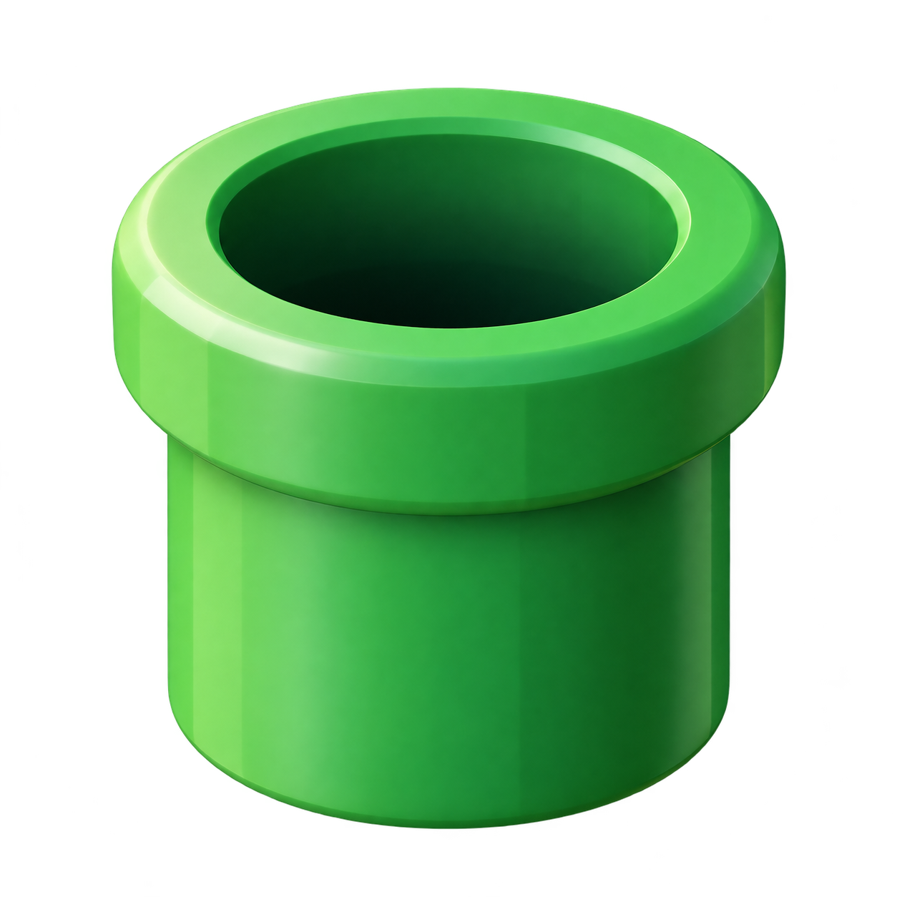

Reino dos Cogumelos
Conjunto GPT · Quatro imagens transparentes de 1254 × 1254 pixels.
Clique em uma peça para abrir o PNG original.

Fan art gerada por imagem. Os prompts e a procedência estão no manifesto do conjunto.
Conjunto GPT · Quatro imagens transparentes de 1254 × 1254 pixels.
Clique em uma peça para abrir o PNG original.

Fan art gerada por imagem. Os prompts e a procedência estão no manifesto do conjunto.